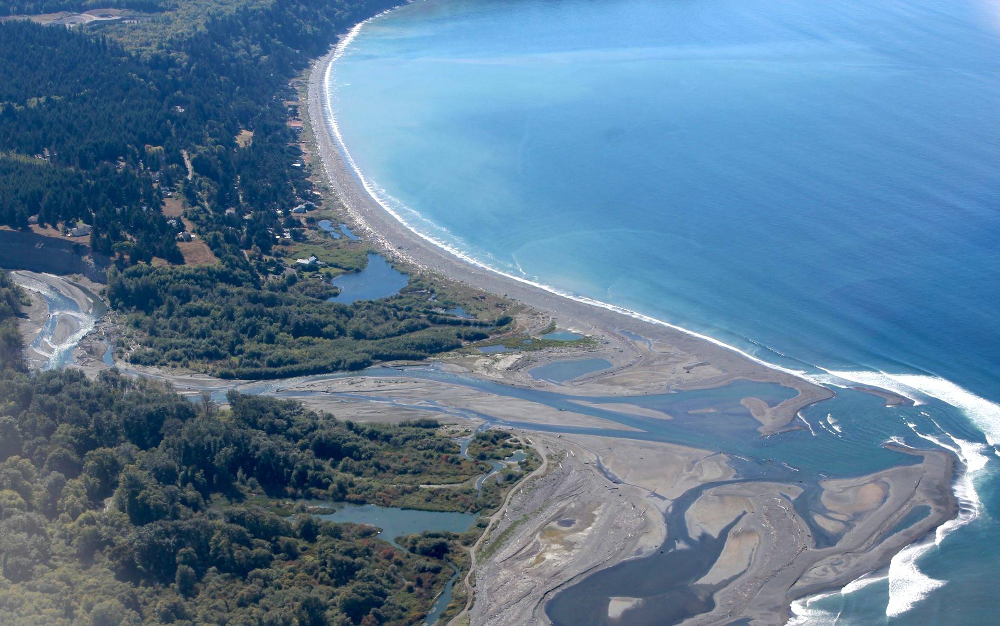
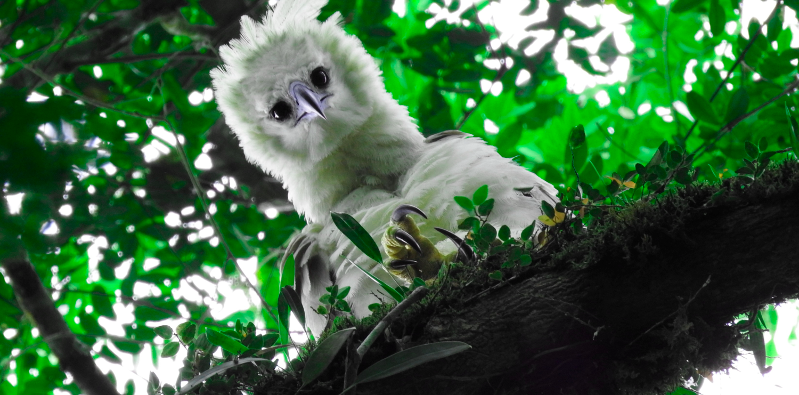
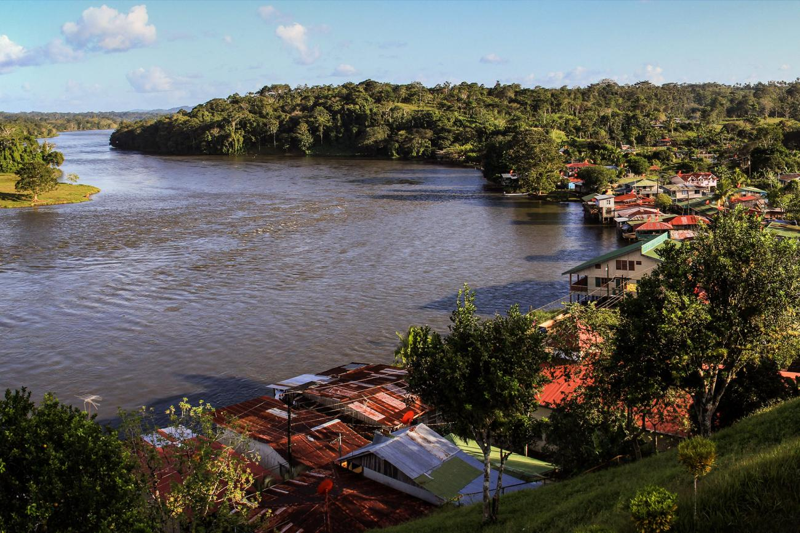
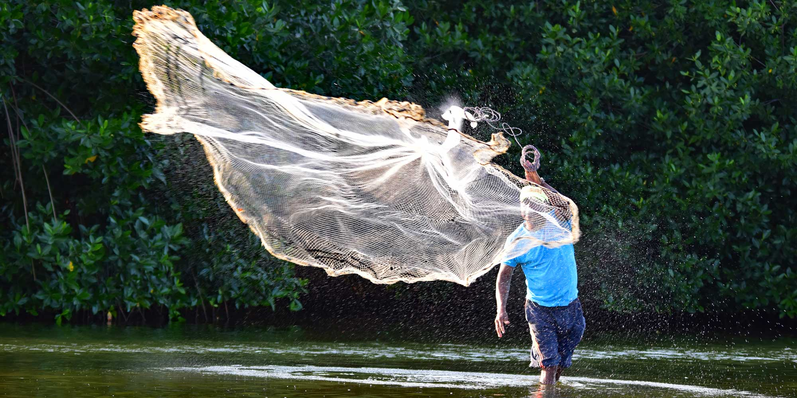
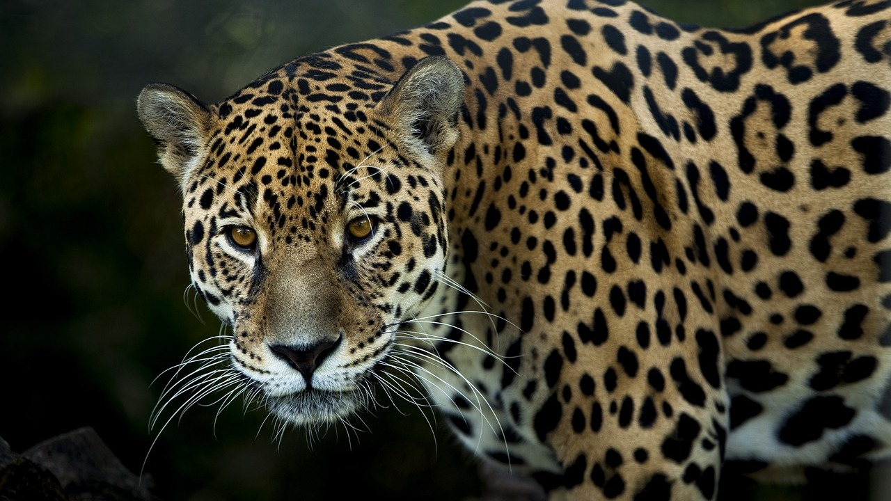

© EO Puget SoundWhere the Andes Meet the Pacific
The Río San Juan begins high in the Western Andes on Cerro Caramanta and travels 380 kilometres through the rainforests of Colombia's Chocó department before fanning out into the Pacific Ocean. Its delta, covering 800 square kilometres, is the largest on the entire Pacific coast of South America: a tide-dominated labyrinth of distributary channels, mangrove forests, and barrier islands shaped by the constant tug-of-war between river force and ocean swell.
The dry season from December through March offers the best conditions for exploring the delta. Water levels settle, making boat navigation through the smaller channels easier, and wildlife concentrates along the distributaries. But this is Chocó, and even the dry season brings frequent rain, and the landscape is never anything less than lush, green, and overwhelmingly alive.

© CGTN NewsThe Chocó: A Biodiversity Hotspot
The San Juan Delta sits at the heart of the Chocó biogeographic region, one of the most biodiverse places on the planet. The extreme rainfall, up to 11,000 mm per year, feeds forests of extraordinary density and diversity. Poison dart frogs, harpy eagles, jaguars, giant anteaters, and several species of caiman share a landscape that has remained largely untouched by roads or industrial development.
The mangrove forests fringing the delta's distributaries are among the most productive in the Americas. Dense stands of red and black mangrove provide shelter and nursery grounds for countless fish species, while pelicans, frigatebirds, and herons patrol the tidal channels. The Chocó's isolation has made it an evolutionary cradle, and a disproportionate number of species here are found nowhere else on Earth.

© Earth Experience / Utría NPThe Fastest-Growing Delta on the West Coast
The Río San Juan carries an average of 2,550 cubic metres of water per second into the Pacific, the highest discharge of any river on the west coast of South America. This immense flow also carries an extraordinary sediment load of 16 million tonnes per year, making the San Juan one of the most productive delta-building rivers in the world. Analysis of shoreline changes over the past century shows consistent advance of the delta front, even as rising sea levels and tectonic activity work against it.
The Pacific coast of Colombia is one of the most geologically active zones on Earth. The Nazca oceanic plate grinds beneath the South American plate at 54 mm per year, producing frequent earthquakes and occasional tsunamis. This tectonic energy shapes the coastline around the delta in dramatic ways, creating a shoreline that is simultaneously advancing through sediment deposition and retreating through erosion and subsidence, a constant, dynamic balance.

© Uncover ColombiaAfro-Colombian Communities of the Chocó
The San Juan Delta and the surrounding Chocó lowlands are home to some of Colombia's most resilient communities. Afro-Colombian families have fished these waters and farmed these forests for generations, and indigenous Emberá and Wounaan peoples maintain deep ties to the river and its resources. Their traditional knowledge of the forest, the tides, and the fish cycles is extraordinary, built over centuries of intimate coexistence with one of the world's most demanding environments.
The delta region has historically been among the most isolated in Colombia, accessible only by river or sea, with no road connections to the interior. This isolation has preserved its extraordinary ecosystems and the cultural traditions of its communities, but it has also meant limited access to services and economic opportunity. Responsible ecotourism, guided by local Afro-Colombian and indigenous operators, is slowly emerging as a way to share this remarkable landscape with the world.
Activities &
Adventures
Discover the many ways to experience the San Juan Delta, from dugout canoe trips through pristine mangroves to birdwatching in one of Earth's richest forests.
Delta Gallery

 © National Geographic
© National Geographic
 © Earth Experience / Utría NP
© Earth Experience / Utría NP

© Colombia One © Rio on Watch
© Rio on Watch